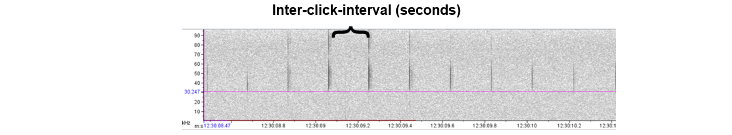
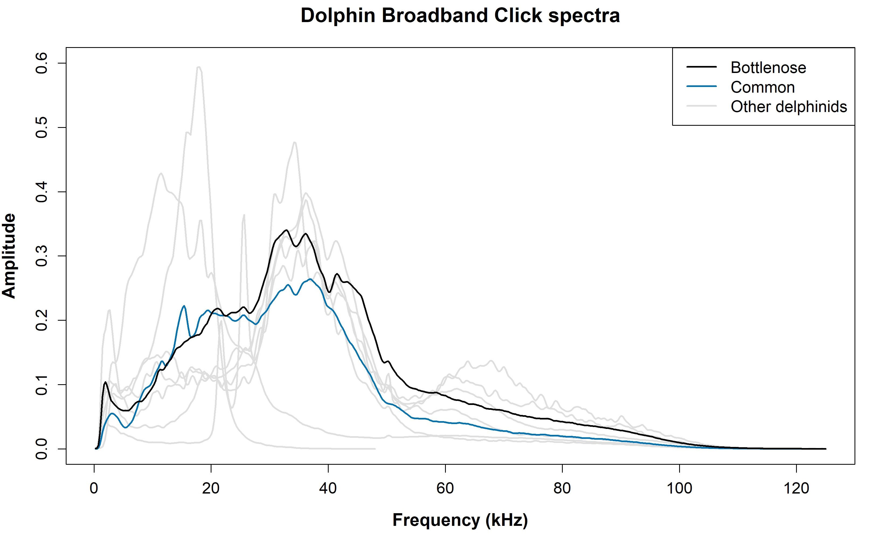
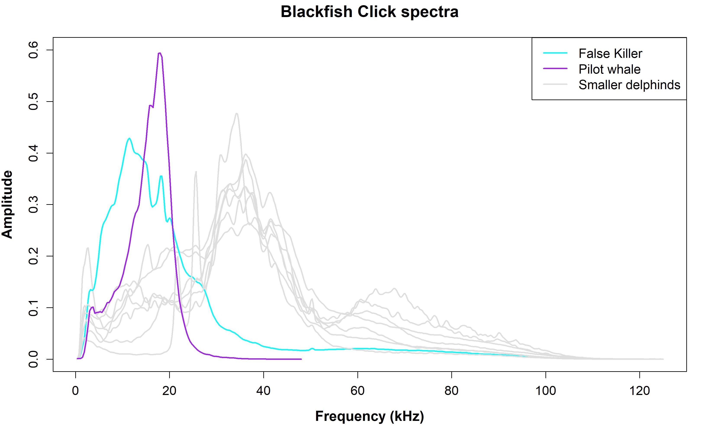
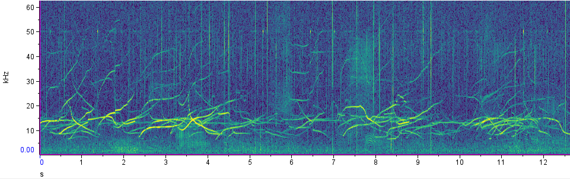
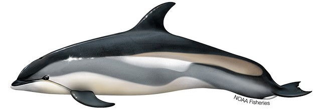
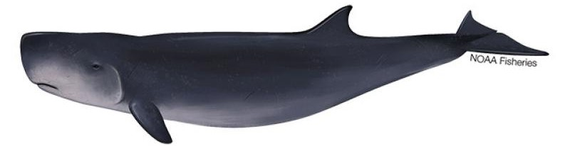

Odontocetes
Life in the ocean provides unique navigational, foraging, and socializing challenges for marine mammals. As a result, they have adapted complex communication systems. The complex acoustic signals span from tonal (continuous sounds likely consisting of frequency modulation - meaning that the energy over the course of the signal changes frequency) to pulsed (rapid burst) sounds. Tonal sounds are strongly linked to socializing events, while pulsed sounds are typically linked to navigation and foraging. However, there are exceptions in odontocete call types such as sperm whale codas.
Foraging calls
While all members of the cetacean family exhibit complex communication, odontocetes have evolved a unique tool that baleen whales do not possess; echolocation. Odontocetes produce echolocation clicks. They have air sacs beneath their blowhole that they release through phonic “lips” (also known as “monkey lips”), which then is focused through their melon - consisting of fatty tissue with similar densities to seawater - that allow the pulsed signal to be focused and transmit better in water. The sound waves from these signals reflect off objects, providing valuable information about environmental topography, prey, etc. Foraging odontocetes also produce ‘buzz’ sounds, a series of rapid echolocation clicks. Different odontocete groups produce clicks at different ranges, known as the interclick interval (see below), which can be used to help identify the sound source.

Social calls
Many odontocetes exhibit socializing calls, including whistles and burst pulses. Whistles are one of the most studied odontocete vocalizations, and are frequency modulated, narrow-band calls. Many dolphin species adopt a ‘signature whistle’ in their first few years of life, which is equivalent to that animal’s “name”. Burst pulses are another social call-type. These are high-frequency pulsed calls, which are emitted quickly and typically broadband. However, they can be difficult to describe as they are incredibly variable. Depending on the species, burst pulses can be described as creaks, squacks, barks, and pops. It is important to note, not all species whistle/and or produce burst pulses.
See our odontocete study species below for more information. Our species list is organized by sperm whale, dolphins, beaked whales, and narrow band high-frequency (NBHF) species (Porpoise, Kogiidae). Each section includes call types, spectra imagery, and wigner plots if applicable.
Sperm whale
Scientific name: Physeter macrocephalus
Makara species code: SPWH
Sperm whales produce echolocation clicks and foraging buzzes (also known as creaks) similar to other odontocete groups. Sperm whale buzzes are emitted during foraging, typically right before prey capture. Sperm whales do not produce whistles, however their social call types include codas, slow clicks (also known as clang), trumpets and social buzzes.
Codas are a patterned sequence of broadband clicks, and are thought to be used for social communication and group cohesion. Female and juvenile sperm whales live in social units which will have a vocal dialect made up of more than 20 different coda types. Slow clicks are typically produced by males, and are thought to be used for long-distance communication. Below is a list of vocalizations monitored by the PAB.
| Call Types | Makara call-type code | ||||
|---|---|---|---|---|---|
| Foraging | |||||
| Echolocation click | SPUSC | ||||
| Creak | SPCREAK | ||||
| Foraging Mix | SPFORG (includes foraging buzzes) | ||||
| Social | |||||
| Coda | SPCODA | ||||
| Slow click/clangs | SPSLCC | ||||
| Social buzz | SPSOCBZ | ||||
| Trumpet | SPTRUMPET | ||||
| Squeal | SPSQUEAL | ||||
| Social mix | SPMIX |
Dolphins
Dolphin species produce various clicks and whistles which are complex, variable, and often overlapping. Clicks are often associated with foraging, whereas tonal whistles and burst pulses are associated with social communication.
| Call Types | Makara call-type code | ||||
|---|---|---|---|---|---|
| Foraging | |||||
| Echolocation clicks | ODCLICK | ||||
| Social | |||||
| Whistles | ODWHIS | ||||
| Burst pulse | ODBP | ||||
| Mixed calls | ODMIX |
PAB typically does not differentiate individual dolphin species for soundtrap data analysis, but will identify species for towed array surveys
Atlantic Spotted Dolphin Whistles
Dolphin clicks
Through our concurrent visual and acoustic studies, we are starting to be able to group our delphinid study species by general click characteristics: Broadband, clicks with a 30-50 kHz peak, and low-frequency high-amplitude (blackfish). Broadband species produce clicks with a wide frequency range, and consists of Bottlenose and Common dolphins.

The second delphinid group is characterized by clicks with an amplitude peak within the 30 - 50 kHz frequency range. See figure for 30-50 kHz peak click spectra and species composition.
The final delphinid group is characterized by low frequency, high amplitude clicks. These are our blackfish species, which are also our largest delphinid species - false killer whales and pilot whales. Blackfish, along with belugas and narwhals, are unique in their ability to biphonate- produce multiple frequency sounds simultaneously. This occurs in their pulsed calls (see below).

Broadband & 30 - 50 kHz species
Atlantic spotted dolphin
Scientific name: Stenella frontalis
Makara species code: WSDO

Atlantic White-sided dolphin
Scientific name: Lagenorhynchus acutus
Makara species code: WSDO

Bottlenose dolphin
Scientific name: Turiops truncatus
Makara species code: BODO
Common dolphin
Scientific name: Delphinus spp.
Makara species code: SADO
Long-beaked and Short-beaked common dolphins cannot be differentiated acoustically
Risso’s dolphin
Scientific name: Grampus griseus
Makara species code: GRAM

Rough-toothed dolphin
Scientific name: Steno bredanesis
Makara species code: RTDO
Striped dolphin
Scientific name: Stenella coeruleoalba
Makara species code: STDO
Spinner dolphin
Scientific name: Stenella longirostris
Makara species code: SNDO
Blackfish species
False killer whale
Scientific name: Pseudorca crassidens
Makara species code: FKWH
Pilot whale sp.
Scientific name: Globicephala spp.
Makara species code: SFPW
Long-finned and Short-finned pilot whales cannot be differentiated acoustically
Beaked Whales
Beaked whales produce two types of clicks - Frequency modulated upsweeps and surface clicks (not frequency modulated, also refered to as impulsive clicks). Frequency modulated upsweeps refers to echolocation clicks produced during foraging events. Similar to sperm whales, beaked whales produce buzzes(rapid echolocation clicks) right before prey capture. Some beaked whale species emit impulsive clicks, which are considered social communication. These are predominantly larger beaked whale species (ex. Northern bottlenose whale and Baird’s beaked whales). Some species may produce whistles as well, however they are uncommon and not well documented.
| Call Types | Makara call-type code | ||||
|---|---|---|---|---|---|
| Foraging | |||||
| Frequency modulated upsweeps | BWFMUP | ||||
| Pulse call | (Specie abbrv.)BWPULSE | ||||
| Social | |||||
| Impulsive click | (Specie abbrv.)BWCLICK | ||||
| Whistle | (Specie abbrv.)BWWHIS |
(Specie abbrv.) Is the first two letters of the species’ common name. For example, a Sowerby’s beaked whale pulse call would be SOBWWHIS.
Beaked whale clicks
Each beaked whale species in the Northeast Region have slightly different click structures, as shown below in a combined click power spectra plot. Note, the power spectra are average values for each species, and individual clicks for each species may differ slightly. Under each beaked whale species heading is a an exemplar click’s Wigner plot, which is the primary tool for determining beaked whale species from a click. Wigner plots were made in Pamguard and are high resolution spectrograms that show the details of the click’s spectral structure. For more information on this software, see our software page.
Sowerby’s beaked whale
Scientific name: Mesoplodon bidens
Makara species code: SOBW

Blainville’s beaked whale
Scientific name: Mesoplodon densirostris
Makara species code: BLBW

Gervais’ beaked whale
Scientific name: Mesoplodon europaeus
Makara species code: GEBW

True’s beaked whale
Scientific name: Mesoplodon mirus
Makara species code: TRBW

Goose beaked whale
Scientific name: Ziphius cavirostris
Makara species code: CUBW
Gulf of Mexico’s Beaked whale (BWG, unknown)
Scientific name: Ziphiidae sp.
Makara species code: BWG
Narrow band high-frequency (NBHF)
Narrow high-band frequency species include porpoises and Kogiidae species (Pygmy and Dwarf sperm whales). Both groups produce indifferentiable clicks. Species are thus identified by recording location - nearshore narrow high-band frequency clicks are denoted as porpoise clicks, offshore as Kogiidae clicks (map right). Porpoises also produce both social and foraging buzzes, indicating an echolocation event.
| Call Types | Makara call-type code | ||||
|---|---|---|---|---|---|
| All Kogiidae species | |||||
| Narrow band high frequency clicks | NBHF | ||||
| Harbor Porpoise only | |||||
| Buzz | POBZ (both foraging and social) |
For Kogia 3: the peak ~117 kHz is an artifact of the high pass filter applied to the data, thus Kogia 3 spectra = Kogia 2 spectra
Harbor porpoise
Scientific name: Phocoena phocoena
Makara species code: HAPO
Pygmy sperm whale
Scientific name: Kogia breviceps
Makara species code: PSWH
Dwarf sperm whale
Scientific name: Kogia sima
Makara species code: DSWH

Sources
Annamaria Izzi DeAngelis, Joy E. Stanistreet, Simone Baumann-Pickering, Danielle M. Cholewiak; A description of echolocation clicks recorded in the presence of True’s beaked whale (Mesoplodon mirus). J. Acoust. Soc. Am. 1 November 2018; 144 (5): 2691–2700. https://doi.org/10.1121/1.5067379
Chloe E. Malinka, Pernille Tønnesen, Charlotte A. Dunn, Diane E. Claridge, Tess Gridley, Simon H. Elwen, Peter Teglberg Madsen; Echolocation click parameters and biosonar behaviour of the dwarf sperm whale (Kogia sima). J Exp Biol 15 March 2021; 224 (6): jeb240689. doi: https://doi.org/10.1242/jeb.240689
Malinka CE, Tønnesen P, Dunn CA, Claridge DE, Gridley T, Elwen SH, Teglberg Madsen P. Echolocation click parameters and biosonar behaviour of the dwarf sperm whale (Kogia sima). J Exp Biol. 2021 Mar 26;224(Pt 6):jeb240689. doi: 10.1242/jeb.240689
Nemiroff L, Whitehead H. Structural characteristics of pulsed calls of long-finned pilot whales Globicephala melas. Bioacoustics. 2009;19:67–92. doi: 10.1080/09524622.2009.9753615.
Pace, D.S., Lanfredi, C., Airoldi, S. et al. Trumpet sounds emitted by male sperm whales in the Mediterranean Sea. Sci Rep 11, 5867 (2021). https://doi.org/10.1038/s41598-021-84126-8